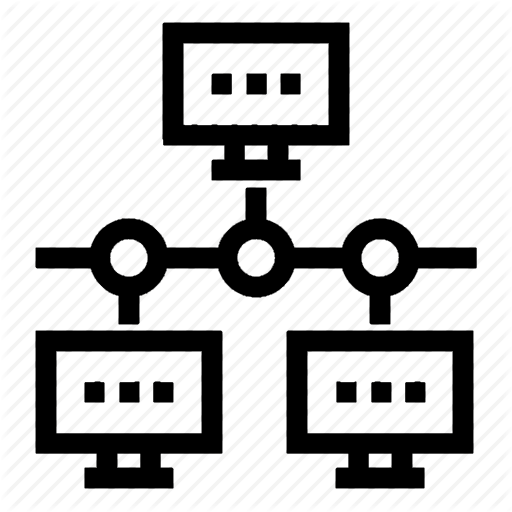

NetMonitor
Scan IP & nom de domaine
Scan réseau local
Minimiser
Quitter
Scan par IP ou nom de domaine

Scan du réseau local
Scan par IP ou nom de domaine
Adresse IP ou nom de domaine
Profil de scan
Par défaut
Rapide
Rapide +
Intensif
Intensif + UDP
Intensif, no ping
Ping
Personnalisé
Arguments
nmap
Lancer le scan
Annuler
Page scan réseau local
Résultats du scan
Lancer le traceroute
Exporter les résultats
Fermer les résultats
Annuler le scan en cours